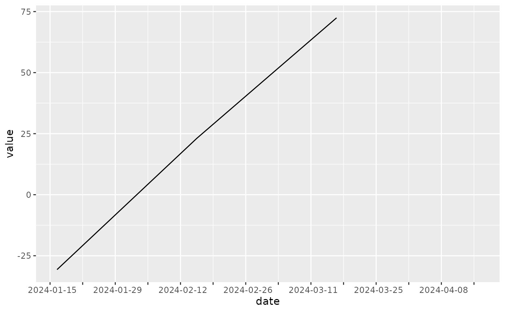
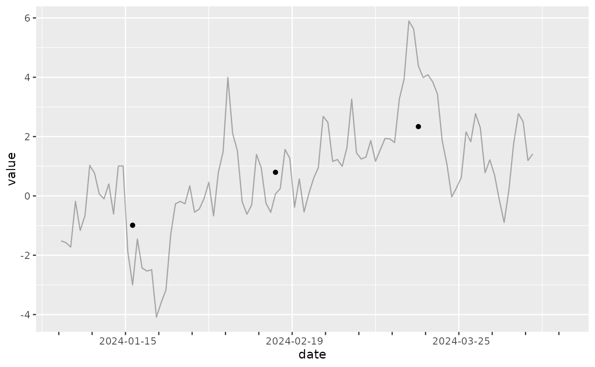
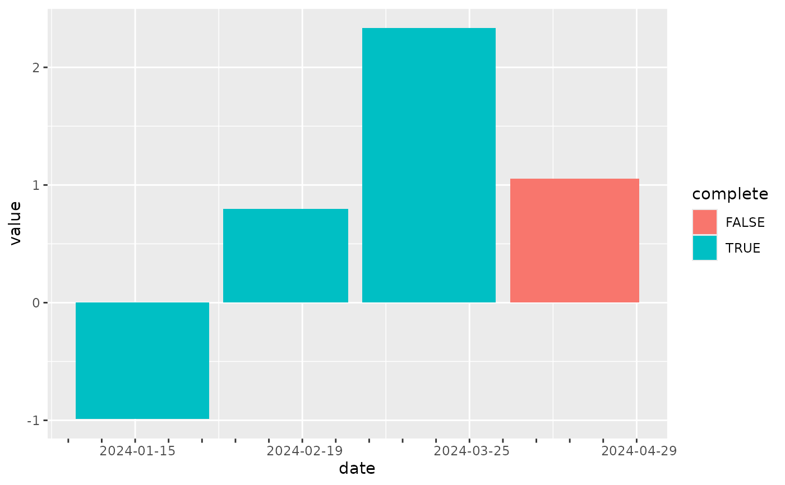
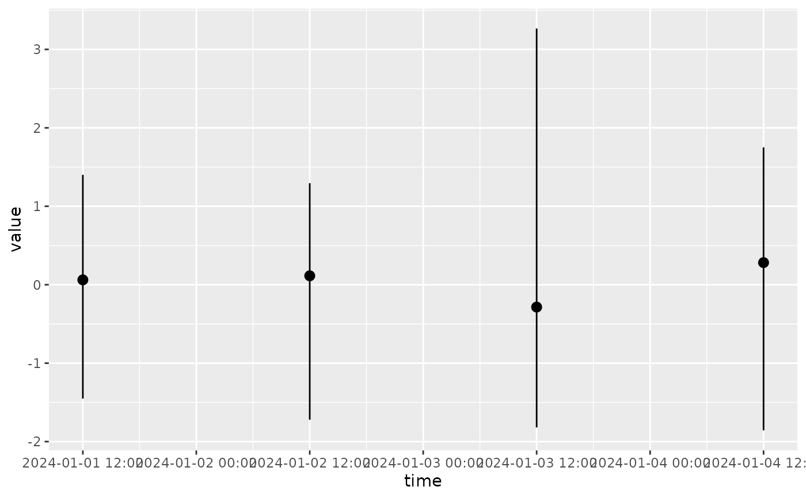

stat_summary_time() is a temporal variation of ggplot2::stat_summary().
Rather than summarising the values at each unique time point, it summarises
the values within each instance of a time granule (e.g. each month).
A summary of a granule that is only partly observed is often misleading, such
as the total of a month which has only just started. The times within each
granule are checked with mixtime::time_is_complete_at(), and implicit
missing values are filled with NA before the summary is computed. With
na.rm = FALSE (the default), functions like mean() and sum() then give
NA for incomplete granules, exactly as they do for explicit missing values.
stat_summary_time(
mapping = NULL,
data = NULL,
geom = "line",
position = "identity",
...,
granule,
fun.data = NULL,
fun = NULL,
fun.max = NULL,
fun.min = NULL,
fun.args = list(),
chronon = NULL,
width = 0.9,
na.rm = FALSE,
orientation = NA,
show.legend = NA,
inherit.aes = TRUE
)Set of aesthetic mappings created by aes(). If specified and
inherit.aes = TRUE (the default), it is combined with the default mapping
at the top level of the plot. You must supply mapping if there is no plot
mapping.
The data to be displayed in this layer. There are three options:
If NULL, the default, the data is inherited from the plot
data as specified in the call to ggplot().
A data.frame, or other object, will override the plot
data. All objects will be fortified to produce a data frame. See
fortify() for which variables will be created.
A function will be called with a single argument,
the plot data. The return value must be a data.frame, and
will be used as the layer data. A function can be created
from a formula (e.g. ~ head(.x, 10)).
The geometric object to use to display the data for this layer.
When using a stat_*() function to construct a layer, the geom argument
can be used to override the default coupling between stats and geoms. The
geom argument accepts the following:
A Geom ggproto subclass, for example GeomPoint.
A string naming the geom. To give the geom as a string, strip the
function name of the geom_ prefix. For example, to use geom_point(),
give the geom as "point".
For more information and other ways to specify the geom, see the layer geom documentation.
A position adjustment to use on the data for this layer. This
can be used in various ways, including to prevent overplotting and
improving the display. The position argument accepts the following:
The result of calling a position function, such as position_jitter().
This method allows for passing extra arguments to the position.
A string naming the position adjustment. To give the position as a
string, strip the function name of the position_ prefix. For example,
to use position_jitter(), give the position as "jitter".
For more information and other ways to specify the position, see the layer position documentation.
Other arguments passed on to layer()'s params argument. These
arguments broadly fall into one of 4 categories below. Notably, further
arguments to the position argument, or aesthetics that are required
can not be passed through .... Unknown arguments that are not part
of the 4 categories below are ignored.
Static aesthetics that are not mapped to a scale, but are at a fixed
value and apply to the layer as a whole. For example, colour = "red"
or linewidth = 3. The geom's documentation has an Aesthetics
section that lists the available options. The 'required' aesthetics
cannot be passed on to the params. Please note that while passing
unmapped aesthetics as vectors is technically possible, the order and
required length is not guaranteed to be parallel to the input data.
When constructing a layer using
a stat_*() function, the ... argument can be used to pass on
parameters to the geom part of the layer. An example of this is
stat_density(geom = "area", outline.type = "both"). The geom's
documentation lists which parameters it can accept.
Inversely, when constructing a layer using a
geom_*() function, the ... argument can be used to pass on parameters
to the stat part of the layer. An example of this is
geom_area(stat = "density", adjust = 0.5). The stat's documentation
lists which parameters it can accept.
The key_glyph argument of layer() may also be passed on through
.... This can be one of the functions described as
key glyphs, to change the display of the layer in the legend.
The time granule to summarise within, given as:
a duration, e.g. mixtime::months(1L)
a time granule, e.g. mixtime::cal_gregorian$month(1L)
a bare expression, e.g. month(1L), naming a granule of whichever
calendar the time axis uses.
A function that is given the values within each granule and
should return a data frame with variables ymin, y, and ymax. If no
summary functions are supplied, the values are averaged with mean().
Alternatively, supply three individual functions that are each passed a vector of values and should return a single number.
Optional additional arguments passed on to the functions.
The time granule at which values are expected to be observed,
specified like granule. The default is the chronon of a mixtime vector,
and the interval (greatest common divisor) found by
tsibble::interval_pull() for other time classes, such as POSIXct.
The computed width, as a proportion of the granule instance.
If FALSE, the default, missing values (both explicit, and
those implied by gaps in time) are given to the summary functions. If
TRUE, missing values are removed before the values are summarised, and
granules without any values are not drawn.
Which positional axis ("x" or "y") carries the time.
The default (NA) determines this from the scales.
logical. Should this layer be included in the legends?
NA, the default, includes if any aesthetics are mapped.
FALSE never includes, and TRUE always includes.
It can also be a named logical vector to finely select the aesthetics to
display. To include legend keys for all levels, even
when no data exists, use TRUE. If NA, all levels are shown in legend,
but unobserved levels are omitted.
If FALSE, overrides the default aesthetics,
rather than combining with them. This is most useful for helper functions
that define both data and aesthetics and shouldn't inherit behaviour from
the default plot specification, e.g. annotation_borders().
stat_summary_time() requires the x and y aesthetics, one of which is
time. Other aesthetics are those of the geom, and are retained if they are
constant within each granule.
Within each group, every granule instance between its first and last
observations is summarised. A granule without observations is summarised from
a single NA, and so breaks a line rather than being drawn through.
Values outside the scale's limits are also missing. Use the limits of
ggplot2::coord_cartesian() to zoom without affecting the summaries.
Some summary functions always ignore missing values, including
ggplot2::mean_se(). Use the computed variable
complete to identify incomplete granules in this case.
These are available to ggplot2::after_stat(), alongside the results of the
summary functions:
nThe number of non-missing values in the granule.
completeWhether the granule has no implicit or explicit missing values.
start, endThe boundaries of the granule, in data units.
widthThe width proportion of the granule, in data units.
ggplot2::stat_summary(), and stat_ohlc() for open, high, low and
close summaries.
library(ggplot2)
daily <- data.frame(
date = mixtime::date(as.Date("2024-01-01") + 0:99),
value = cumsum(rnorm(100))
)
# Monthly totals, where the last month is incomplete and so is missing
ggplot(daily, aes(date, value)) +
stat_summary_time(granule = month(1L), fun = sum)
#> Warning: Removed 1 row containing missing values or values outside the scale range
#> (`geom_line()`).

# Monthly means are on the same scale as the data
ggplot(daily, aes(date, value)) +
geom_line(alpha = 0.3) +
stat_summary_time(granule = month(1L), fun = mean, geom = "point")
#> Warning: Removed 1 row containing missing values or values outside the scale range
#> (`geom_point()`).

# Summarise the available values, and highlight incomplete months
ggplot(daily, aes(date, value)) +
stat_summary_time(
aes(fill = after_stat(complete)),
granule = month(1L), fun = mean, geom = "col", na.rm = TRUE
)

# Hourly observations stored at a 1 second chronon
hourly <- data.frame(
time = mixtime::datetime(
as.POSIXct("2024-01-01", tz = "UTC") + 0:95 * 3600
),
value = rnorm(96)
)
ggplot(hourly, aes(time, value)) +
stat_summary_time(
granule = day(1L), chronon = hour(1L), geom = "pointrange",
fun = median, fun.min = min, fun.max = max
)
